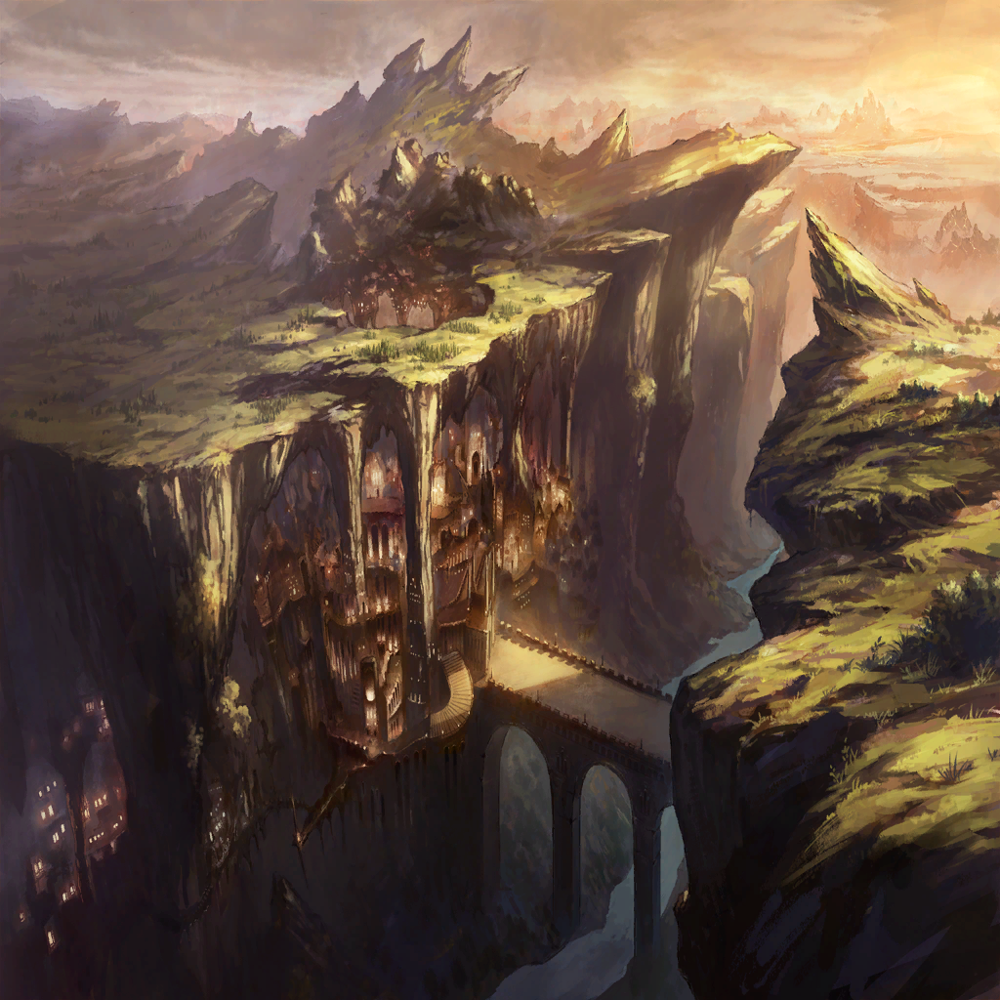

|
|
| |
…正直な話、怒りを忘れたことはない |
| |
見るも無残に滅び去った故郷に
あてもなく、滅びゆく大地を見る人々に |
| |
そして、そんな私たちを
“救う”などという甘言で、新たな地獄に
迎え入れた竜と呼ばれる者たちにも |
| |
どうせ終わるのならば、
あのまま終わってしまうべきだった |
| |
己が怒りを止められなかった私たちは、
当然の末路として滅びるべきだった
けれど、竜を名乗るヒトビトは言う |
| |
“一度の失敗で、
その知性の限界は測れない” |
| |
“だからもう一度、確かめよう
我らが保ったこの世界を、
新たな故郷とする資格があるか” |
| |
冗談じゃない
冗談じゃない
冗談じゃない |
| |
終わるはずだった竜（もの）が
終わるべきだった人（もの）を導いている |
| |
これを神の慈悲だなんて
到底、思えはしなかった
だって、こんなの、ただ―― |
| ローレアム |
ただ死に損なった、だけじゃないか… |
| |
互いに、ありもしない藁を掴もうとしている
ここはもうとっくに、くらいくらい
灯りひとつない、冷たい海の底なのに |
 |
| |
それは、ちっぽけでくだらない
ある戦争が終わった日のこと |
| |
私たちが、竜に敗北したあの日の記憶 |
| リンドレイク |
――行き倒れか |
| |
頭上から聞こえてきた声で、目が覚めた |
| |
全身が重い
体はどこも傷だらけで、
痛まない部分のほうが少ない |
| リンドレイク |
その装備は…傭兵というやつか |
| リンドレイク |
人竜戦争の生き残り
自我をもって、
竜種の理想を拒絶した最後の者たち |
| リンドレイク |
人が竜に挑むなど、
無謀以外の何ものでもないが… |
| リンドレイク |
その望みは正しいと、認めよう
人は、自分の意志で明日を描くべきだと |
| |
その声は厳かで、頑なで
でも私にはどこか、優しく聞こえた気がした |
| リンドレイク |
俺は最早、人の在り方に干渉する意思はない
だが… |
| |
大きくて、温かい手が私の頭に触れる
治療を受けているのだと気づいたのは、
次に目を覚ました時だったか |
| リンドレイク |
ここでひとり救ったところで、
大局に影響などありはしまい |
| |
そこまで言ってから、
“それ”は自分の行いを
嘆くかのように天を仰ぎ |
| リンドレイク |
…ああ、我らの行いの、
なんと傲慢であることか
やはり竜は、人から離れるべきだ |
| リンドレイク |
人に後を託すと決めたのならば
我らはもはや世界の余分でしかないのだから |
| |
その声の寂しそうな響きを、今も覚えている |
| |
人の為に、私たちの為に
何かできないかと考えて、考えて、考えて |
| |
結局、何もしないのが最善だと
そう判断した寛容の竜との
これが最初の出会い。そして… |
| |
私がこの層の為に戦うと決めた、その理由 |
| |
触れれば壊れてしまう人間（もの）の為、
近寄らないことを選んだヒトとの、
出会いだった |
|
 |
| ？？？ |
――い |
| ？？？ |
おい、そろそろ起きろ
相談の時間だ |
| ローレアム |
ん…ここ、は |
| クェンス |
ようやくお目覚めか、お姫様
とりあえず一帯の警戒は終わったぜ |
| ローレアム |
そっか、ありがとう。助かったよ
ええと…君は…ああ、クェンス君か
そうだった、そうだった！ |
| クェンス |
アンタな、
ヒトの名前を忘れるとかサイテーだぞ？ |
| クェンス |
まあ、いい
この辺りは自然洞窟が多いおかげか、
身を隠すのに苦労はなさそうだ |
| ローレアム |
…何人救えたかな |
| クェンス |
数で言えば、七対三の三のほうだな |
| クェンス |
その上、無事逃げ延びた連中も意気消沈中だ
まあ、あんなことがあったんだから当然だが |
| 憤怒の民たち |
………… |
| クェンス |
終始あの様子で、
こっちの呼びかけにも反応が薄い |
| クェンス |
ここからさらに他所に逃がすのは
難しいだろうな |
| ローレアム |
…それでも、助かった命がある
クェンス君のおかげだ。ありがとう |
| クェンス |
助かった命、ね |
| クェンス |
それはつまり、
“変わった”連中は
もう助からないってことだな？ |
| ローレアム |
それは |
| クェンス |
ここまで巻き込まれたんだ
コトの原因くらいは知っておきたいのが
人情だろ |
| クェンス |
アンタがあの竜――
リンドレイクに近しい人間だってのは
わかってんだ |
| クェンス |
だったら、何か知ってることが
あるんじゃないか？ |
| ローレアム |
…君は、知っているかな？
竜種が私たちに課した、試練のことを |
| クェンス |
世界の継承に当たって、
竜が人間に求めた“罪の克服”ってやつか |
| クェンス |
知ってはいるさ
俺たちの層では、気にもしてなかったがな |
| ローレアム |
君のところのは色欲だろう？
それ、克服すると絶滅確定じゃないか |
| クェンス |
だな
竜種が俺たち人間に課した、
杓子定規なお題目ってやつだ |
| クェンス |
大体、
あの試練は“傲慢”以外はぶっちゃけ
ついでみたいなもんだろ |
| クェンス |
それだけが唯一、
竜には捨てられなかったものだって
話だし？ |
| ローレアム |
…私たち人間も同じだけどね |
| クェンス |
そうだな
俺も人のことは言えないね |
| クェンス |
で、その試練がなんだってんだ
まさか、あの有り様が―― |
|  |
|
| クェンス |
…試練を越えられなかった人間への罰、
なんて話をするつもりじゃないだろうな？ |
| ローレアム |
もちろん、違うさ
けど、もとをただせば同じことなんだ |
| クェンス |
同じ…？ |
| ローレアム |
“意味のない怒り”の末路… |
| クェンス |
あ？ |
| ローレアム |
あの現象はね、
この層で怒りに囚われたものが堕ちる
自業自得の末路なんだ |
| ローレアム |
この世界に満ちるマギルという力は、
知性体の“意志”によってその色を変える |
| ローレアム |
怒りの色。嘆きの色
希望の色。慈愛の色 |
| ローレアム |
この世界で振るわれる魔法とか、
竜の理法といった力は私たちの意志が
マギルに色をつけることで起こる現象だ |
| クェンス |
魔法使いの基礎だな
それで？ |
| ローレアム |
このマギルの色つけは一時的なものだ
万物は流転するっていうだろ？ |
| ローレアム |
どんな形に変化したマギルも、
最後には大地の深くに還っていって
無色のマギルに戻るんだ |
| クェンス |
その循環を司ってるのが、天の外殻…
ウロボロスってやつなんだろ？ |
| ローレアム |
そこまで知ってるのか
意外と博識だね？ |
| クェンス |
ただの受け売り知識だ
で？ それがどうしたってんだ |
| ローレアム |
けれどね、本当の本当に
強い意志で変えられたマギルは
もうそれ以上変化することがない |
| ローレアム |
色で言えば、黒って感じかな？
もう何が混ざっても、
どんな色にも変わらない極限の色 |
| ローレアム |
そうなったマギルは、
外殻ですら処理できずに
この世界に溜まっていく |
| クェンス |
…おい、待て。まさか |
| ローレアム |
そう、あれはこの世界の限界そのものだ |
| ローレアム |
彼らはね、クェンス君
そのマギルに塗り潰されてしまったんだ
心も、魂も、何もかもを |
 |
| リンドレイク？ |
ォァァアァアアアアァアァァ!! |

ザフィリス |
リンドレイク…！ |
ザフィリス |
くっ、完全に自我を失っているのか？
このまま、あのマギル規模で暴れれば
この山そのものが… |
ザフィリス |
…止めるしかない、か |
ザフィリス |
（だが、できるのか？） |
ザフィリス |
（以前はメルビレイと、
人間たちの力を借りた。だが、今は…） |
ザフィリス |
…私ひとり、か |
| リンドレイク？ |
オォォォォォオォォォ!! |
ザフィリス |
だが、この身は守護竜の任を帯びし者
ヒトの住まう領域を破壊せんとする暴威を、
見過ごすことはできない…！ |
ザフィリス |
…例え、
同胞の命脈を断つことになろうとも |
| リンドレイク？ |
アアァァアアァァァアァ!! |
ザフィリス |
我が爪牙の理、ここに示す…！ |